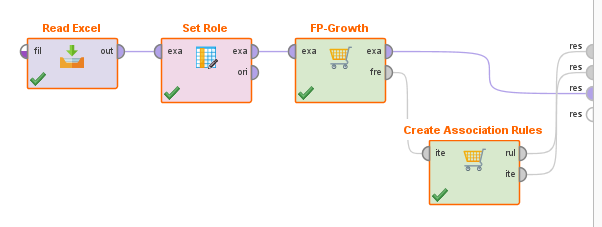
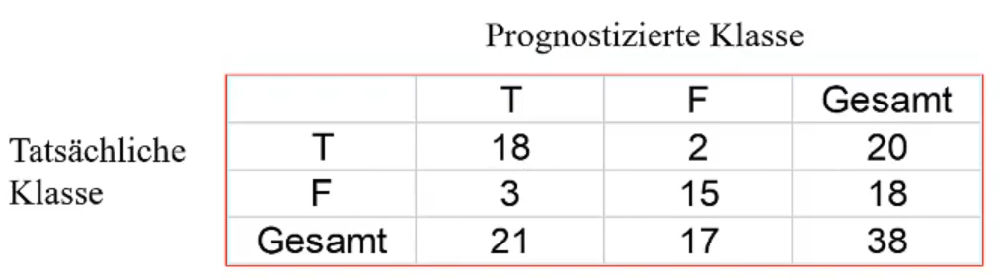
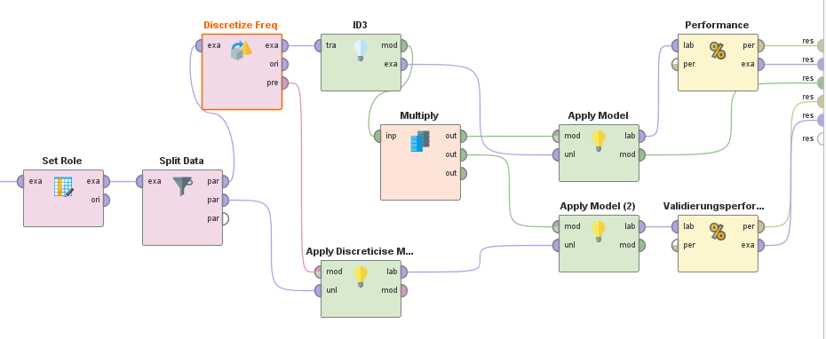
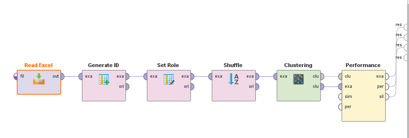
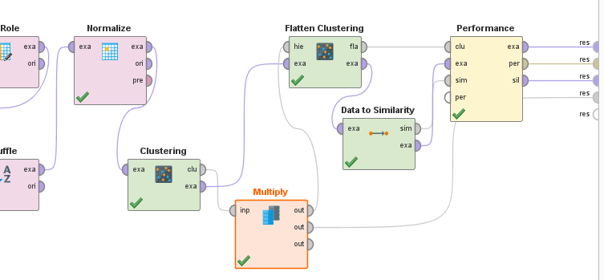

Prüfung: Selber Stern-Schema erstellen?
Übung 3 könnte Klausur sein, oder man bekommt Faktentabelle und soll Dimensionstabellen erstellen etc...
"Fakten" in der Faktentabelle sind Werte ohne weitere Dimensionstabelle
Beispiele, Folie 26: Anzahl
arbeiten immer auf dem aktuellsten Stand
Zugriff umfasst immer eine kleine Datenmenge
- einfach Lese- und Schreibaufgaben
Schnelle Antwortzeiten benötigt!
Inhalt des Moduls "Datenbanksysteme"
Ungeeignet für Data Mining, weil wir wollen:
- ...historische Daten (aus verschiedenen Zeiträumen, nicht nur aktuell)
- ...große Datenmengen
- ...wir wollen Daten aggregieren, also längere Antwortzeiten wären keine Problem
Fokus dieses Moduls
Es geht nicht um das alltägliche Tagesgeschäft, sondern eher um (größere) strategische Entscheidungen --> DECISION SUPPORT
historisch Daten
große Datenmengen -> Lange Lesetransaktionen [in dem Kontext auch akzeptabel]
Meist Integration, Konsolidierung und Aggregation der Daten
Was muss man bei OLAP Datenbanken beim Entwurf beachten?
OLTP- und OLAP- Anwendungen nicht auf dem selben Datenbestand ausgeführt werden.
System für OLAP-Anwendungen nimmt man auch Data Warehouse
Von Zeit zu Zeit werden Daten aus dem OLTP System in das Warehouse übertragen, aber auch von Dateien wie Excel usw. [Dadurch historische Daten?]
A Data Warehouse is a subject-oriented, integrated, non-volatile, and time variant colletion of data to support management decisions.
[W.H. Inmon, 1996]
Fakten
- betriebswirtschaftliche Kennzahlen
- [Erlöse, Gewinne, Verluste, Umsätze, ...]
Dimensionen
- Betrachtung dieser Kennzahlen aus unterschiedlichen Perspektiven
- [zeitlich, regional, produkzbezogen, ...]
Hierarchien, Konsolidierungsebenen
- Unterteilung der Auswertungsdimensionen möglich
- [zeitlich: Jahr, Quartal, Monat; regional: Bundesländer, Bezirke, Städte/Gemeinden; ...]
Theoretisches Konstrukt welches dem Data Warehouse zu Grunde liegt.
Hochdimensionaler Würfel
Kanten: Dimensionen
Zelle: eine oder mehrere Kennzahlen
zwei Operationen durchführen:
In der Hierarchie eine Stufe nach Oben
Datan werden verdichtet
Weniger Attribute in GROUP BY => stärkere Verdichtung => Roll-Up
In der Hierarchie eine Stufe nach Unten
auf feinerer Ebene gehen
Mehr Attribute in GROUP BY => weniger starke Verdichtung => Drill-Down
Direkt Data Cube erstellen [MOLAP] war nicht erfolgreich und hat sich nicht durchgesetzt. Transformation war damals aber nicht nötig.
Durchgesetzt haben sich die ROLAP [relationale OLAPs]
Vorteil: Verfügbarkeit
Speicherung und Zugriff muss gut umgesetzt sein.
| Snowflake Schema | Star Schema |
|---|---|
| Normalisierung | Denormalisierung |
| Vermeidung von Redundanzen | Sehr Redundant |
| Memory Efficient | Schnelle Anfragebearbeitung bei einfachen Queries |
| Hohe Skalierbarkeit | Einfache Erstellung/Wartung |
| High Data Integrity (FK) | Eventuell Update-Anomalien |
| -> more Flexible | |
| Geeignet für komplexere Systeme |
Eigene Tabelle für jede Klassifikationsstufe / Hierarchiestufe
Eine Faktentabelle und theoretisch unendliche untergeordnete Klassifikationstabellen
normalisiert
skalierbar
unterliegt keinen Update-Anomalien (durch Normalisierung und Verknüpfung durch Keys lassen sich Daten ohne Probleme/Auswirkungen ändern, da nicht direkt diese Zellen referenziert werden.)
relativ aufwendiges Zusammenholen von Informationen (VIELE JOINS)
viele Foreign Keys
dadurch geringe Redundanzen --> effiziente Speichernutzung
Eine Faktentabelle
Für jede Dimension EINE Dimensionstabelle
--> viel Redundanz!!
Anfragebearbeitung aber schneller!!
STERN JOIN:
- SELECT
- Kenngrößen (evtl. aggregiert)
- Ergebnisgranularität (Dimensionen)
- z.B. Zeit.Monat, Geographie.Stadt
- FROM
- Faktentabelle
- Dimensionstabellen
- WHERE
- Verbundbedingungen
- Restriktionen in Dimensionen
- z.B. Produkt.Produktgruppe = "Elektrogeraete", Zeit.Monat = "Januar 2000", ...
Aggregation nicht immer neu berechnen, sondern häufig genutzte Aggregationen materialisieren
Erweiterung des group bys und aggregiert Daten über mehrere Dimensionnen hinweg.
Query-Komplexität reduziert
Aggregierung wird effizient INTERN gerechnet.
- Faktentabelle wird beispielsweise nur einmal gelesen
ROW STORE [klassisch] stellt eine normale Faktentabelle mit Zeilen und Spalten da.
relative neue Innovation ist die COLUMN STORE.
Jede einzelne Spalte wird zu einer eigenen Tabelle welche mit einer ID versehen ist.
Vorteil:
- Schnelle Anfragebearbeitung, da relativ wenige Daten bei einer Anfrage bewegt werden.
- Es muss nicht die ganze Tabelle mit vielen für die Anfrage irrelevanten Spalten gelesen werden, sondern wirklich genau nur die relevante Spalte.
Nachteil:
- Generierung von Redundanz
Kunde könnte mehrere Verträge haben. Keine Informationen in die Faktentabelle, welche man irgendwo anders herbekommt, keine berechneten Werte. [bool(SMS) ist vielleicht etwas redundant, abewesend von Empfänger Nummer könnte auf SMS hinweisen.]
Hier ist jetzt kein Fakt in der Faktentabelle. Die Kombination von Information stellt aber schon den Fakt da.
Both "Beginn" und "Ende" greifen auf die selbe Dimensionstabelle zu!
Die Dauer wäre dann Ende - Beginn
Vorwarnung: wenn man eine Faktentabelle bekommt, dann Faktentabelle auch so lassen!! Das vorgegebene ist Fix!
Bei "Verträge" auch Beginn und Ende machen, weil Kunde kann Vertrag auch beenden oder ändern. Darüber stellt man fest welcher Vertrag/Tarif gerade gilt.
Im Stern-Schema müsste man beispielsweise alle Tarif Infos in die Verträge Tabelle kommen, um nicht eine weitere Dimensionstabelle zu machen. In der Praxis würde man eine weitere Dimensionstabelle machen. Hier macht es inhaltlich Sinn eine weitere Dimensionstabelle für Tarif oder Addresse zu machen. Auch in der Klausur ist er gnädig. Bei der Zeit weitere Dimensionstabellen wären aber nicht in Ordnung.
VertragsID und Kundennummer sind ja in der Faktentabelle verbunden, also die Kundennummer muss nicht nochmal in die Verträge Tabelle.
Bei der Empfänger Nummer im Optimalfall auch die Vorwahl erfassen und weitere Sachen erfassen. [Gehört die Nummer zu einem Unternehmen etc.. ]
| Kundennummer | Beginn | Ende | Vertragsid | Empfänger Telefonnummer | bool(SMS) |
|---|---|---|---|---|---|
| 6848 | 30.01.2000 15:32:43 | 30.01.2000 15:35:57 | 567 | 058305839 | False |
| Kundennummer | Geburtsdatum | Vorname | Nachname | Straße | Hausnummer | PLZ | Ort | Bundesland | Land | Geschlecht | Beruf |
|---|---|---|---|---|---|---|---|---|---|---|---|
| 6848 | 23.02.1988 | Peter | Hansson | Siemensstraße | 445 | 4235 | Hansdorf | Hessen | Deutschland | Männlich | Schlosser |
| Dat_Uhrzeit | Tag | Monat | Jahr | Quartal | KW | Wochentag | Saison | bool(Ferien?) |
|---|---|---|---|---|---|---|---|---|
| 30.01.2000 15:32:43 | 30 | 01 | 2000 | 1 | 4 | Dienstag | Winter | True |
| 30.01.2000 15:35:57 | 30 | 01 | 2000 | 1 | 4 | Dienstag | Winter | True |
| Vertragsid | TarifID | Telefonnummer |
|---|---|---|
| 567 | 7 | 05830583 |
| TarifID | Mindestpreis | Preis_SMS | Grundgebühr |
|---|---|---|---|
| 7 | 9000€ |
Datenvorbereitung ist zwischen Selection und Data Mining und beschreibt Preprocessing und Transformation
Datensatz --> Ein Datensatz beschreibt einen geordneten Vektor von Ausprägungen, die ein Objekt (z.B. Kunde, Nutzer, Produkt) für eine fixe Menge von Variablen (Attribute, Eigenschaften, Merkmale) besitzt.
Datenset --> Eine Menge von Datensätzen, die die gleiche Variablenstruktur besitzen, werden als Datenset bezeichnet.
Data Cleaning, Data Integration, Data Transformation, Data Reduction
Daten können inkonsistent, unvollständig, verrauscht sein.
Ursachen:
- Problem bei Eingabe, Übertragung oder Erfassung
- Diskrepanz bei Namenskonvention
- Duplizierte Datensätze
- Daten mehrfacht erhoben
Wirkung:
Unvollständige, fehlende, widersprüchliche oder irrelevante Daten.
Datenbereinigung:
Ergänzen, Verrauschungen glätten, Korrigieren, entfernen
Varianten
1. Datensätze mit fehlenden Datensätzen werden nicht berücksichtigt
2. Fehlende Werte eienr Variable durch Mittelwert oder Median ersetzen
- Eher für Einzelfälle
3. wahrscheinlichsten Wert zum Auffüllen des fehlenden Wertes bestimmten
- Fehlenden Wert prognostizieren
- Hoher Aufwand
4. Variable ersetzen durch künstliche binäre Variable ["value_exists_yn"]
- Informationsverlust
- Häufigste Lösung
Einfluss von extremen Werten reduzieren und zufällige Datenschwankungen ausgleichen.
array: list = [4, 8, 15, 21, 21, 24, 25, 28, 34]
| Bin1 | 4 | 8 | 15 |
| Bin2 | 21 | 21 | 24 |
| Bin3 | 25 | 28 | 34 |
means
| Bin1 | 9 | 9 | 9 |
| Bin2 | 22 | 22 | 22 |
| Bin3 | 29 | 29 | 29 |
boundaries
--> Min und Max von jedem Behälter finden und restliche Werte mit nächstgelegenen Extremwert ersetzen.
| Bin1 | 4 | 4 | 15 |
| Bin2 | 21 | 21 | 24 |
| Bin3 | 25 | 25 | 34 |
means (oder median) üblich, boundaries eher selten und für Verrauschungen innerhalb der Werte.
Durch Clustering Aureißer finden und diese eventuell eliminieren
Daten an eine Funktion anpassen
starke Manipulation der Daten
vorsichtig sein
Kombination von Daten aus mehreren Quellen in einem kohärenten Datenspeicher
Schema Integration, die selbe Information kann in mehreren Datenbanken verschiedene Namen haben [Kundennummer, Kndnnmr, customernr...]
Semantische Homogenität!
Datenwertkonflikte beheben, unterschiedliche Darstellungen oder Skalen von Informationen, beispielsweise Datumformat, float to int, ...
Redundante Variablen entfernen! [z.Bsp. mit Korrelationsanalyse]
Variablen haben häufig andere Ausprägungen der Spannweiten
--> nervig für Data Mining
Einflüsse müssen normiert werden.
Zwei Normalisierungstypen:
Min-max-Normalisierung und Z-Normalisierung
Z-Normalisierung ist preferred
Min-Max hat Probleme mit Ausreißer, die
Normalisierung muss unbedingt dokumentiert werden. Es muss genau so wiederholbar sein um Fehler zu korrigieren oder Daten erneut zu analysieren
Min-Max-Normalisierung
v' = ((v - min) / (max - min)) * (newmax - newmin) + newmin
wenn newmin, newmax = [0, 1], dann reicht:
v' = (v - min) / (max - min)
Z-Normalisierung
v’ = (v - Mittelwert) / Standardabweichung
Nach Z-Normalisation gilt: Mittelwert=0 und Standardabweichung=1
Wenn Variablen mit unerschiedlichen Skalierungen
skalierungen: nominal (kategorial), ordinal, metrischen (kontinuierlich)
metrische Variable in eine ordinale oder nominale variable konvertieren.
Unterteilung des Bereichs des Attributs in Intervalle
--> gewisse Informationsverlust
Ähnlichkeit zum Binning
1. Paritionierung mit gleicher Breite (Abstand)
Aufteilung in gleich gro0e Intervalle (einheitliches Gitter)
Breite des Intervals: W = (hoechsterWert - niedrigsterWert)/N
Problem: Ausreißer haben großen Einfluss
Konvertierung von nominaler Variable zu metrischer Variable
keine richtige metrische Variable, sondern Dummy-Variable
Umwandlung von Dichotom zu 0 und 1
macht aber sinn wenn man Wahrscheinlichkeit oder so summiert oder sowas.
Redundanz beachten und entfernen!
Beispiel:
Man hat die Variable 'Outlook' mit der Domain = [overcast, rain, sunny]
und erstellt Dummy Variablen:
- Outlook_overcast
- Outlook_rain
- Outlook_sunny
mit den Domains = [0, 1]
Einer dieser Variablen kann komplett wegfallen, da man auf einer der Variablen mit Hilfe der anderen schließen kann
(Outlook_sunny löschen weil redundant. Outlook_sunny = 1 if Outlook_overcast == 0 and Outlook_rain == 0)
Leistungsfähigkeit verbessern.
Repräsentative Reduktion
--> Datensätze entfernen, welche durch andere Datensätze repräsentiert werden.
Entfernung sollte zufällig geschehen
Reduziertes und unreduziertes Ergebnis sollte ähnlich sein!
Vielleicht Daten verdichten (von Quartal auf Year)
nichts links bei input, soll ja alles automatisiert sein!!!!!!!
Row number ist nicht wie ID durch operator (Generate ID)
Rollen sieht man nicht rofl, aber für einen selber für später
"ori" gibt Daten so aus wie sie in den Operator reingekomme sind.
nicht originale Datenbank verändern.
Ursprung: Supermarkt: Welche Produkte werden gleichzeitig gekauft? (Point-of-Sale-Daten), geht aber mittlerweile darüber hinaus.
Es geht darum, Verbindungen zwischen Objekten zu finden, welche in Transaktion vorkommen.
Man möchte Regeln finden, welche das Vorhandensein einer Menge von Items mit einer anderen Menge von Items verknüpft.
Wir sind an folgdenden Regeln interessiert, welche...
- nicht-trivial (vielleicht sogar unterwartet),
- praktisch umsetzbar,
- erklärbar sind.
Wir haben eine Menge M von Transaktionen gegeben
|TransactionID|Items|
|---|---|
|100|A, B, C|
|200|A, B|
|300|A, D|
|400|B, E, F|
|M| ist die Anzahl der Transaktionen in M
|M| = 4
I ist die Menge der unterschiedlichen Item in M
I = {A, B, C, D, E, F}
Form the Regel: X -> Y (Aus Menge X folgt Menge Y)
wobei A ∩ B = ∅ [X und Y sind disjunkt]
Aufbau: Prämisse {body} -> Schlussfolgerung {head}
(IM RPM: Premise --> Conclusion)
beides werden als Menge von Items dargestellt.
die zwei wichtigen Maßzahl zur Bewertung dieser Regeln sind Support und Konfidenz
Anzahl der Transaktionen in M, in den das Itemset vorkommt.
σ({A, B}) = 2
Relativer Anteil der Transaktionen M, in denen das Itemset enthalten ist.
sup(Itemset) = σ(itemset) / |M|
= 2/5
Ein künstlicher erdachter Grenzwerkt für den Support eines Itemsets.
Itemsets mit sup(Itemset) >= minsup gelten als frequent Itemsets
Beispielhafte, konkrete Idee:
Bei einer Assoziationsregel mit hoher Konfidenz sollte man nicht Produkte aus beiden Mengen rabattieren!
[Da das jeweils andere Produkt ja sowieso mitgekauft wird.]
Für n Items gibt es 2^n Itemsets!
Eine hohe Konfidenz ist nur aussagekräftig, wenn der Support gering ist.
--> Wenn eine Produkt sowieso sehr häufig gekauft wird [-> hoher Support], dann ist logischerweise eine hohe Konfidenz das Ergebnis, jedoch nicht für die Assoziation oder Kombination der Produkte aussagekräftig.
Für dieses Problem gibt es die Maßzahl Lift, welcher die Konfidenz und den Support in Verhältnis setzt.
hoch = gut, höher als 1
lift(X -> Y) = conf(X -> y) / sup(y)
lift(X -> Y) = sup(X U Y) / sup(X)sup(Y)
(statt Brute-Force-Ansatz)
Idee:
Wenn ein Itemset häufig ist, sind auch die Teilmengen des Itemsets häufig!
--> wenn {A, B} häufig gekauft wird, dann wird das Itemset {A} oder {B} mindestens auch so häufig gekauft
Warum? Anti-Monotonie-Eigenschaft des Supports
auch andersherum:
Wenn ein Itemset nicht häufig ist, gilt das auch für jede Obermenge dieses Itemsets!!
Mit dem Apriroi-Algorithmus schaut man Schritt für Schritt ob der minsupp gegeben ist und wirft Mengen und Untermengen raus, welche diese nicht erfüllen. Dann bildet und rechnet man Regeln mit verbliebenden Mengen.

frequent itemsets finden, also Itemsets, mit einem gewissen Mindestsupport.
positive value: Was gilt als True?
min support: minsup
find number of itemsets: true or false
-> min number of datasets: int
Erstellt aus frequent itemsets Assoziationsregeln und filtert alle Regeln nach einem Kriterium.
criterion: Kriterium nachdem gefiltert werden soll, meist confidence [confidence, lift, conviction...]
min confidence / min criterion: minimum was vom ausgewählten Kriterium in der Regel gegeben sein muss.
Objekte in vorgegeben Klassen einordnen, Objekte sind durch Variablen bestimmt.
Zuerst Model erstellen auf Basis von Objekten, wessen Klassenzuordnung wir kennen, dann auf unbekannte anwenden.
Klassifizierungsleistung/Classification accuracy/Trefferquote, Prognosequote: Anteil der Objekte die korrekt klassifiziert werden.
(sollte zwischen Validierungs- und Trainingsdate relativ identisch sein.)
Es ist eventuell sogar erwünscht, nur eine Accuracy von 90% bei den Trainingsdaten zu erhalten, um eine bessere Generalisierungsleistung zu erzielen.
also eine 100% konsistentes Model bei den Trainingsdaten ist eventuell overfitted
OCCAM'S RAZOR
- einfache Regeln und Variablen häufig besser
- Einfaches Model spart Daten und ist leichter zu vermitteln.
- Bessere Generalisierungsleistung
Model soll Daten Trainingsdaten nicht auswendig lernen, sondern natürlich general einsetzbar sein! (Generalisierungsleistung)
Effizienzaspekte:
1. Trainingsdauer
- Effizienz des Algorithus um das Modell zu trainieren
2. Anwendungsdauer
- Effizienz der Anwendung des Models
Zielvariable / target
- Variable im Trainings-Datensatz, der sich die vordefinierte Klasse entnehmen lässt.
Klassenbezeichnung / class labels
- Ausprägung der Zielvariable
Trainingsdaten / training set
- Menge des Trainings-Datensatzes, welches zum Trainierungs oder Lernen verwendet wird.
Modell kann in verschiedenen Formen repräsentiert werden, einige Beispiele:
- Decision Trees, Regelwerk, Wahrscheinlichkeiten, Neuronale Netzwerke, If Statements...
Validierungsdaten / test set
- Trainingsdatensätze, welche nicht für's Modeltrainings verwendet wurde.
Trefferquote auf Trainingsdaten und Validierungsdaten bestimmen.
Der Unterschied sollte kleiner als 10% sein, sonst nicht ausreichende Generalisierungsleistung.
Üblicherweise werden 70-80% der Trainings-Datensätze zum Trainieren und 20-30% für die Validierungsdaten verwendet.
-> Man möchte logischerweise eine gute Basis für das Training schaffen, jedoch gleichzeitig ausreichend validieren!
Ergebnis der Model Validierung ist eine Klassifizierungsmatrix/confusion matrix)
Zwei Klassen: T und F

Gesamttrefferquote: (20 + 18) / 38 = 87%
Trefferquote Klasse T: 18 / 20
Trefferquote Klasse F: 15 / 18
Das Modell wird verwendet um für unklassifizierte Objekte die Klasse zu prognostizieren.
Statistische Zusammenhänge != Kausalität
Widerspruchsfrei!
Achtung vor Overfitting, sorgt für schlechte Generalisierungsleistung.
Wurzelknoten
- Oberster / Erster Knoten
Innere Knoten
- Repräsentiert Ausprägung einer Variable
Äste / Kanten
- Verbindung zwischen Knoten
- Repräsentiert eines Tests
Blattknoten
- Letzter Knoten, von welchen keine weiteren Äste abgehen
- Repräsentiert Klassen-Bezeichnung
Pfad
- Weg vom Wurzelknoten bis zu einem Blattknoten
Wenn Variablen metrisch, dann mit Intervallen arbeiten!
[if temperature > 80...]
Jeder Pfad in einem Entscheidungsbaum repräsentiert eine Regel.
--> jeder Entscheidungsbaum lässt sich in Regeln konvertieren
Rekursiver Prozess aus drei Schritten.
Zur Verbesserung der Generalisierungsleistung / Auswendiglernen reduzieren
Äste zu Knoten entfernen, welche nur durch wenige Datensätze gestützt sind.
Es gibt einige Maßzahlen zur optimalen nächsten Variablenauswahl.
Alle haben Vor- und Nachteile, am besten alle ausprobieren und bestes Ergebnis benutzen.
Zufällige Auswahl hat auch schon gute Ergebnisse
Information Gain hilft, um Variable zu finden, welche ...
Wiederholen lol
"Information Gain" bevorzugt Variablen mit groß Anzahl von Ausprägungen
C4.5-Algorithmus
tendiert zu unbalancierten Bäumen (extremer Kontrast bei Länge der Pfäden)
pass
Overfitting
- Baum lernt lediglich Trainingsdaten auswendig
- aufgrund von vielen Blattknoten und relativ wenigen Trainingsdatensätzen..
- Spezialisierung
- Kleine (zufällige) Unterschiede in den Trainingsdaten werden zu eigenen Regeln, wobei diese generalisiert nicht anwendbar sind.
Ein überangepasster Decision Tree hat möglicherweise Regeln entwickelt, die speziell auf die Nuancen der Trainingsdaten zugeschnitten sind, ohne die zugrunde liegenden Muster zu erfassen. Das führt dazu, dass der Baum auf neuen Daten schlecht generalisiert.
Prepruning
- Baum vorher beschneiden.
- Knoten entfernen, welche nur durch wenige Datensätzen gestützt werden.
- Was sind "wenige" Datensätze?
-
Postpruning
- Nachträglich beschneiden
- Bäume verschieden beschneiden und nachher besten durch Tests herausfinden.
Beispiel: Jeder Blattknoten muss durch >10 Datensätze gestützt sein.

Aufteilung der Datensätze in Trainings- und Testmenge. Verhältnis: ~7-3
Diskretisierung, da ID3 Algorithmus nur mit nominal skalierten Variabel umgehen kann
subset attribute auswählen, man kann auswahl invertieren
range name type: interval / long / short
number of bins: Anzahl der Bins bei Intervallbildung
erstellt unpruned Decision Tree, Orientierung an ID3 Algorithmus, braucht nominal skalierte Daten
criterion: information gain / gain ratio / gini index / accuracy [Variablen Auswahl]
minimal size for split: 2
minimal leaf size: 1
Mulitpliziert hier das trainierte Model, sodass wir es auf Trainings- UND Testmenge anwenden können!
Wendet ein model auf ein Datenset an.
Hier wendet es einmal den durch die Trainingsmenge trainierten DecisionTree auf die Trainingsmenge (oben) und auf die Testmenge an.
Nimmt LabelledData von einer Klassifikationsanalyse und bewertet diese, in dem es eine confusion matrix erstellt.
es lässt sich ein main criterion auswählen, accuracy macht hier am meisten Sinn
Objekte in Gruppen einteilen.
[Im Unterschied zur Klassifikation sind diese Gruppen jedoch vorher nicht bekannt!]
--> Gruppen werden aus Daten raus generiert.
Es kann auch Objekte geben, welche sich keinem Cluster zuordnen lassen [Ausreißer]
Ein Cluster bildet eine Gruppe von Objekten welche sich ähnlich sind.
Objekte unterschiedlicher Cluster sind sich unähnlich
Eine Variable wählen, für jede Ausprägung eine Gruppe bildeln
Nächste Variable und Untergruppen bilden
Ein Cluster würde beispielsweise alle "unter 20 Jährigen, weiblich, einkommen über 1000€, gute Bildung" abbilden
Exponentionell viele Gruppen mit jeweils relativ wenigen Objekten
Diskretisierung nötig -> Informationsverlust
Schlechte Ergebnisse, dieser Ansatz hat viele Probleme
Aus Ähnlichkeitsmaß lässt sich das Distanzmaß errechnen:
1 - Ähnlichkeitsmaß = Distanzmaß
Andersherum ist dies nur möglich, wenn man das Maximum kennt.
Manhattenn-Distanz
Euklidische-Distanz
Cosinusähnlichkeit
Cosinusähnlichkeit benutzen, wenn 0 keine inhaltliche Relevanz hat
Bei Manhattan und Eklid ist eventuell problematisch, dass die "0" gleich keine Eingabe steht.
Tanimoto Maß ist ein guter Kompromiss.
Clusterzahl k muss vorgeben werden [Problem]
- inhaltlich begründet
- basierend auf Ergebnisse anderer Verfahren
- Vorgaben
- Zufall und Variation
- Silhouetten-Koeffizient
Anfangspartition festlegen und Objekte einsortieren
- Zufall und Variation
- basierend auf Ergebnisse anderer Verfahren
Änhlichkeit von jedem Objekt zu jedem Clauster berechnen und zur größten Ähnlichkeit verschieben
iterative Erkennung eines Centroiden und Berechnung der Ähnlichkeit zu eben jenem Centroiden
Platzierung der anfänglichen Centroiden ist relevant fürs Ergebnis!
Ähnlichkeit zwischen Clustern ist nicht gleich Ähnlichkeit zwischen Objekten:
Häufig Kombination der Methoden.
Erst single-linkage, dann Ausreißer entfernen und mit complete-linkage beenden.
Im Dendogramm die optimale Clusterzahl finden (visuell) [erster großer Sprung]
Mit dem Silhouetten-Koeffizient lässt sich auch die optimale Clusterzahl berechnen
Die Silhouette von Objekt i S(i) drückt aus, wie sehr ein Objekt in das zugeordnete Cluster A passt.
Ergebnis liegt zwischen 1 und -1
Der Silhouetten-Koeffizient ist einfach das arithmetische Mittel aller Silhouetten Objekte in einem Cluster c oder im Gesamtdatensatz.
Die optimale Clusteranzahl k lässt sich hiermit ermitteln.
Das Clustering mit dem höchsten Silhouetten-Koeffizienten enthält das optimale k
Interpretation-Faustregeln:
s(i) < 0.25 -> schlecht
0.25 < s(i) > 0.5 -> mittelmäßig
0.5 < s(i) -> gut

k-means Ergebnisse sind teilweise von Reihenfolge der Datensätze abhänig.
random seed Angabe möglich
Der eigentliche k-Means-Algorithmus.
add cluster attribute: [x]
--> erstellt Attribut cluster und trägt clusternumer ein.
k: int
max runs: int
determine good starts values: [x]
--> uses k-means++
measure type: NumericalMeasure, NominalMeasure, MixedMeasure
bei measure type = NumericalMeasure:
numerical measure: EuclideanDistance, Cosinus-Ähnlichkeit (cosineSimilarity), manhatten distance...
random seed
berechnet Silhoutte für jedes Objekt, avg Silhouette für jeden Cluster UND avg Silhouette für den ganzen Gesamtdatensatz
Wichtig für eine Clusterlösung ist, dass die beiden Attribute nicht korrelieren. Mit dem Operator Correlation Matrix stellt die Correlation zwischen allen Attributen dar. Hinzufügend kann der Operator Remove Correlated Attributes automatisch korrelierende Attribute rausfiltern.
Üblicher Grenzwert: 0.8 (gilt mit und ohne Vorzeichen)

Cluster Model verdoppeln, um es gleichzeitig weiterzubenutzen UND um es einfach auszugeben um sich das Dendogram anzuzeigen.
Dendogramm kann Auskunft darüber geben, wieviele Cluster optimal sind.
Agglomerative Clustering läuft immer weiter, flatten clustering nimmt einen Stand von mittendrin.
number of clusters
berechnet Ähnlichkeit von ExampleSet, nötig um Silhouette auszugeben UND anderes Ähnlichkeitsmaß zu benutzen.
measure type:
x measure:
wenn kein Spaltenname in Excel vergeben, macht der Rapid Miner eine Durchnummerierung
blackbox, kein Regelsystem, jedoch leistungsfähig af
Neuronen, weights, Abbild des Gehirns
fp-growth minimum support bestimmte prozentzahl
Assoziatioanalyse = Ähnlichkeit von Worten innerhalb eines Dokumentes
cluster = ähnlichkeit zwischen Dokumenten [read csv, rename, select attributes, set role, hierarchische clustering für Ausreißer (cosinusÄhnlichkeit), flatten Clustering, data to similarity, performance]
perceptron ist ein Neuronales netzwerk ohne hidden layer
Assoziationsanalyse nicht perfekt, einfach zu viele Regln und kleine Confidence, man könnte aber einfach die höhste Confidence nehmen
(kann man für Empfehlungssysteme nutzen, aber nicht optimal.)
Klassifikationsanalyse, was zeichnet Personen aus, welche ein bestimmtes Video schauen? (sozio-demographisch, andere geschaute Videos), auch aufwendig, da man für jedes Video eine Klassifikationsanalyse durchführen müsste; kommt eher nur für wichtige Dinge in Einsatz, wenn sich der Aufwand lohnt.
Clusteranalyse auch möglich, bestimmte Videos sind ähnlich, Videos im gleichen Cluster vorschlagen.
ODER Personen clustern
aus dieser Idee kommt das, was sich durchgesetzt hat:
Collaborative Filtering
"was haben Personen, welche mir ähnlich sind, ein bestimmtes Produkt bewertet?"
--> Deren hochbewertete Produkte/Videos werden mir wieder empfohlen.
Wann sind andere mir genau "ähnlich"? Was heißt hier "ähnlich"?
Zwei Ansätze:
Wie haben Nutzer ein bestimmtes Item bewertet?
und wie habe ICH dieses bestimmte item bewertet?
Haben wir eine ähnliches Bewertungsgeschichte?
Wenn wir ähnliche Bewertungen haben, die andere Person aber einen weitere Film, welche ich nicht kenne, positiv bewertet, wird er mir auch gefallen.
Wenn wir ähnliche Bewertungen haben, die andere Person aber einen weitere Film, welche ich nicht kenne, positiv bewertet, wird er mir auch gefallen.
Nachteil:
Wenn neue Nutzer/Items dazukommen, muss alles neu berechnet werden, dafür aber gute Ergebnisse (Hoher Aufwand)
Vorschläge müssen ja auch schnell generiert werden.
KLAUSUR: In der Lage sein, beide Ansätze erklären, nicht konkret ausrechnen.
Nicht Nutzer werden verglichen, sondern Items.
Welche Objekte haben von den selben Nutzern ähnliche Bewertungen bekommen.
Ählnichkeit wird über Items hergestellt.
Ich schlage einem Nutzer mit einer Vorliebe für ein bestimmtes Item ein ähnlich Item mit gleichen Bewertungen vor.
Viel schneller.
"Wie werden Objekte bewertet"? Es geht NUR ums Rating!
Metadaten, wie Länge des Films, Schauspieler, Genre, etc..., sind erstmal egal.
Es werden fast keine Daten erhoben.
Einfaches Prinzip
nicht viele Bewertungen nötig.
Individuelle Bewertung ins Verhältnis von der allgemeinen Bewertung setzen.
Klausur zwei stunden
kein SQL
Klausur sind drei Teile aus vier möglichen Blöcken
Wenn er uns eine Faktentabelle gibt, muss diese so bleiben, Bezeichnung von Attributen NICHT ändern.
garbage in - garbage out
Heuristiken, kein perfektes Ergebnis im Unterschied zur Statistik
Neuronale Netzwerk sind leistungsfähig af und in dem Aspekt allen Verfahren überlegen, der Vorteil der andereren System ist die Transparenz und Nachvollziehbarkeit. Ethische Fragen!?!?!??"!?§"!?§?"!§?"!§?$§I$%
Korrelation != Kausalität
In der Prüfung keine SQL Befehle
In der Klausur bekommt man Bilder vom Rapid Miner und man muss die Operationen erklären
auch einzelne Paramter erklären
und Ergebnisse erklären
alles in den Tutorials an Prozessen
in rapid miner heißt NN nicht unbedingt Neuronales Netz, sondern neighest Neighbour!!!!!!!!!!!!!!!!!